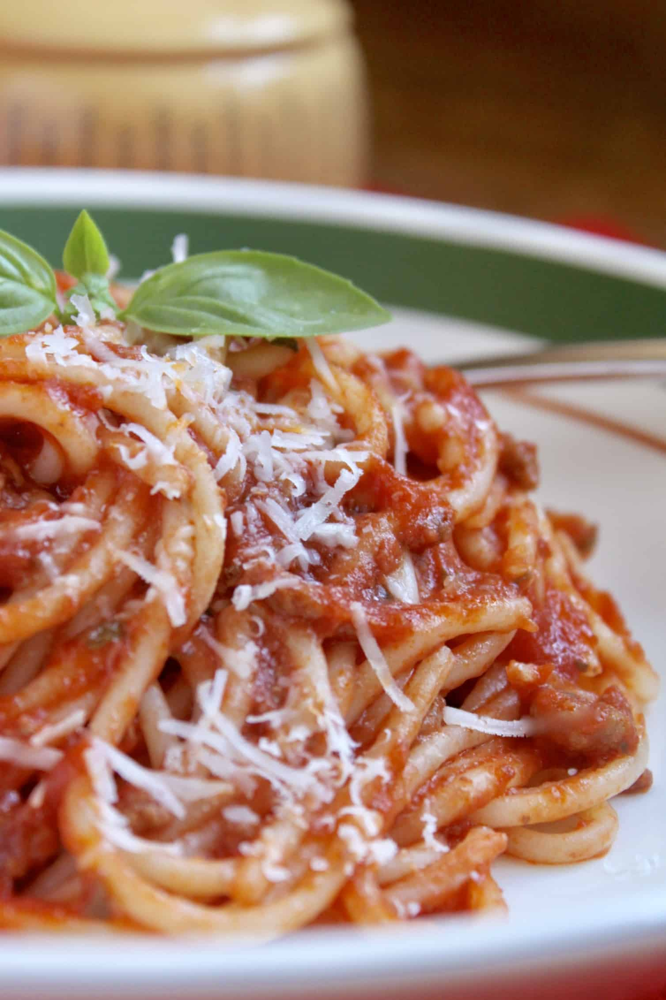
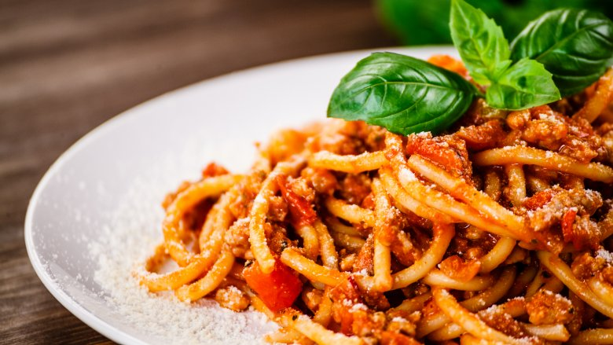

Welcome to a classic Italian Christmas! This recipe can be prepared anytime of the year, but it is so much better during the holidays. Serve up to 4 and you will be happy till New Years!

Ingredients
1 box of DeCecco Spaghetti pasta (substitute with any other pasta shape of your choice)
1 jar (24 ounces) of Classico tomato basil sauce
1/2 cup of Fisher brand pine nuts
1/4 cup of Fisher brand chopped walnuts
1/4 cup of Sun-Maid brand red raisins
1/4 cup of Sun-Maid brand golden raisins
Directions
Boil water for pasta. Once water is boiling, add salt for taste and then add pasta. Cook pasta according to packaging instructions.
In a separate pot, add in 1 jar of Classico tomato basil sauce. On low heat, begin to heat sauce for 5 minutes covered. DO NOT BRING TO BOIL.
After 5 minutes of heating, add in 1/2 cup of pine nuts, 1/4 cup of chopped walnuts, 1/4 cup of red raisins, and 1/4 cup of golden raisins to the sauce.
Stir sauce to combine ingredients then shimmer on low heat for 10 to 15 minutes covered. Sauce should thicken and have a dark red color when finished.
Once pasta is cooked, drain from water. DO NOT RINSE. Finally, serve your finished sauce over your desired amount of pasta. If desired, add fresh parmesan cheese over top and serve with garlic bread.

Storage Instructions
Sauce can be made up to 2 days in advance and should be refrigerated until heated again.
Leftover sauce should be stored in a separate container from pasta and can be refrigerated up to 5 days.